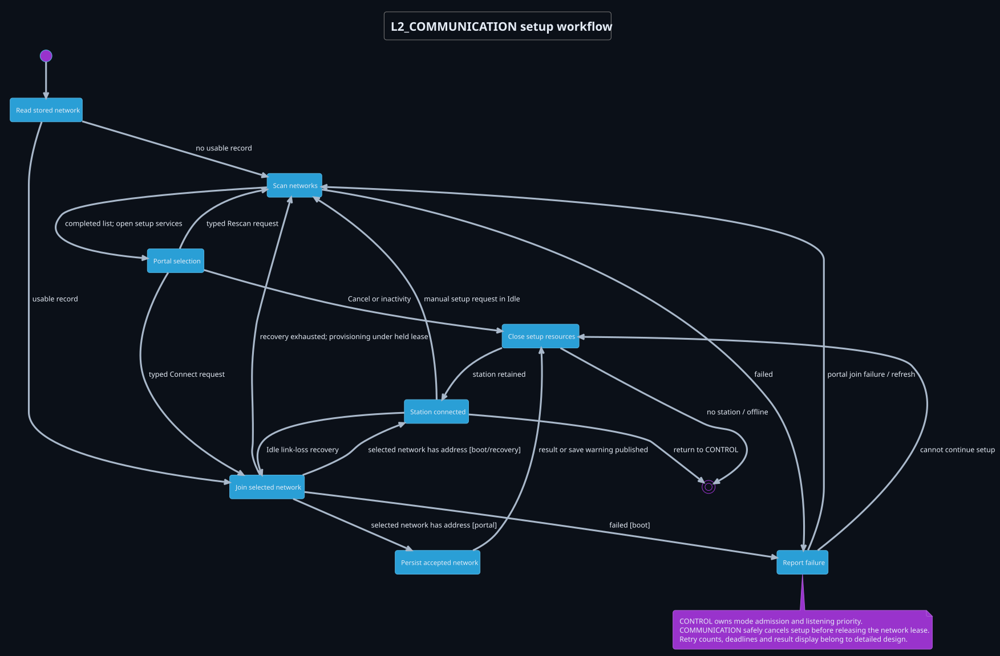
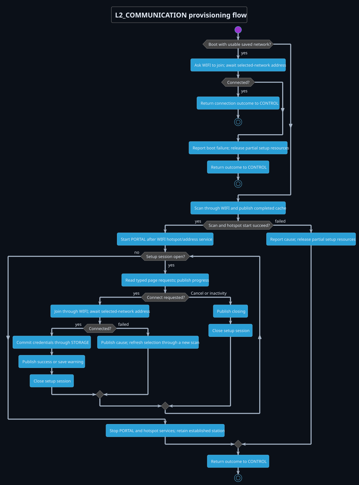
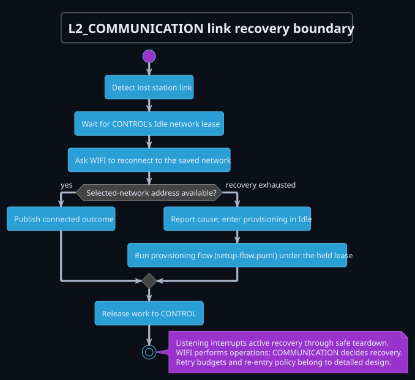
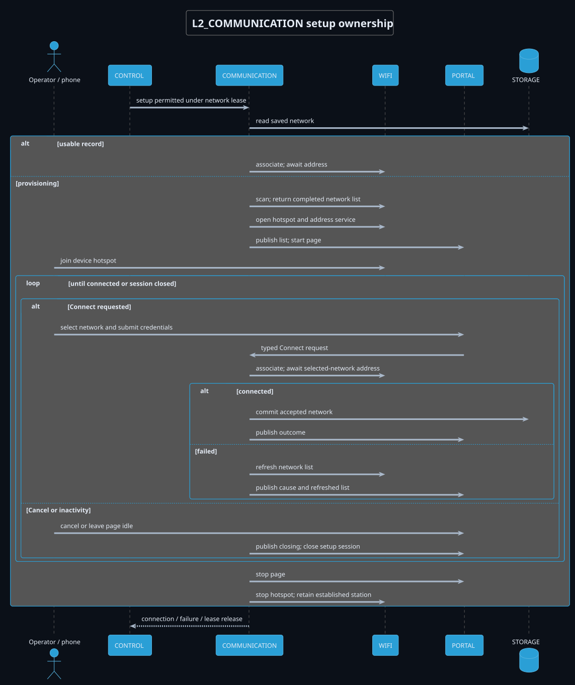

L2_COMMUNICATION setup architecture
Workflow ownership and service boundaries. Retry counts, timing, page contracts and indication values belong to detailed design.
Setup State


Setup Flow


Link Recovery


Setup Sequence

